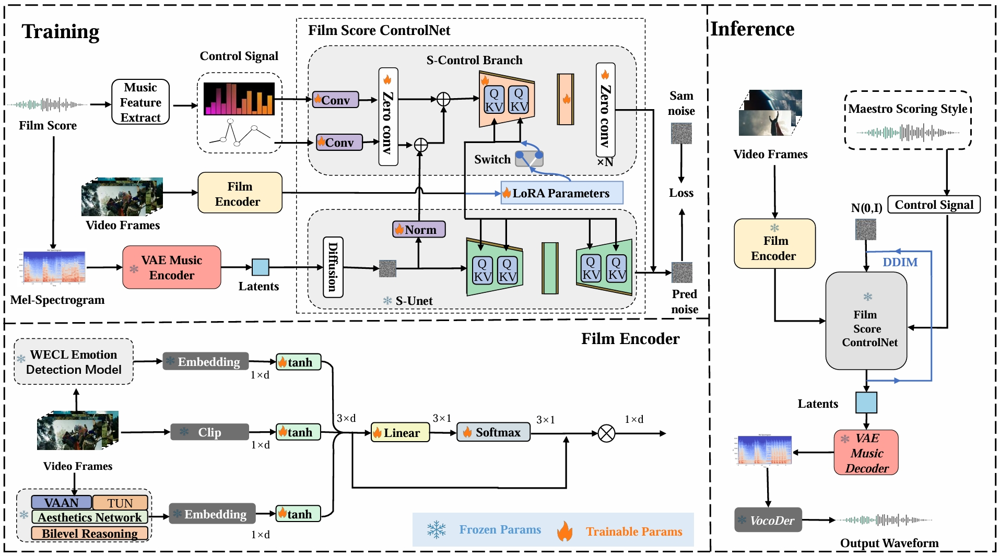

Harmonizing Pixels and Melodies: Maestro-Guided Film Soundtrack Generation Based on ControlNet
Abstract
We introduce a pioneering film score generation framework to harmonize visual pixels and music melodies utilizing the principles of a latent diffusion model. Our framework processes film clips as input and excels at generating music that aligns with a general theme, while also offering the capability to tailor outputs to a specific composition style. Contrary to approaches that convert video to text and then text to music, our model directly produces music from video, utilizing a streamlined and efficient tuning mechanism on ControlNet. It also integrates a film encoder which is adept at understanding the film's semantic depth, emotional impact, and aesthetic appeal. Additionally, we introduce an innovative metric aimed at evaluating the originality and recognizability of music within film scores. To fill this gap for film scores, we curate a comprehensive dataset of film videos and legendary original scores, injecting domain-specific knowledge into our data-driven generation model. Our model outperforms existing methodologies in creating film scores, capable of generating music that reflects the guidance of a maestro's style, thereby redefining the benchmark for automated film scores and laying a robust groundwork for future research in this domain.

Figure 1: Illustration of our HPM framework. a). During the training stage, our model incorporates the video feature as a global control input, alongside the local control signal of melody and dynamic. b). During the inference stage, the local controls can be one composition style of one specific master, guiding the Film Score ControlNet to produce a Mel-spectrogram, subsequently converted into audio via a vocoder. c). The film encoder processes to extract emotional, semantic, and aesthetic embeddings, enriching the model's interpretative depth.
Film score generation:
| Input Video | Ground-Truth Score | Output Score |
|---|---|---|
| Input Video | Style Music | Output Score |
|---|---|---|